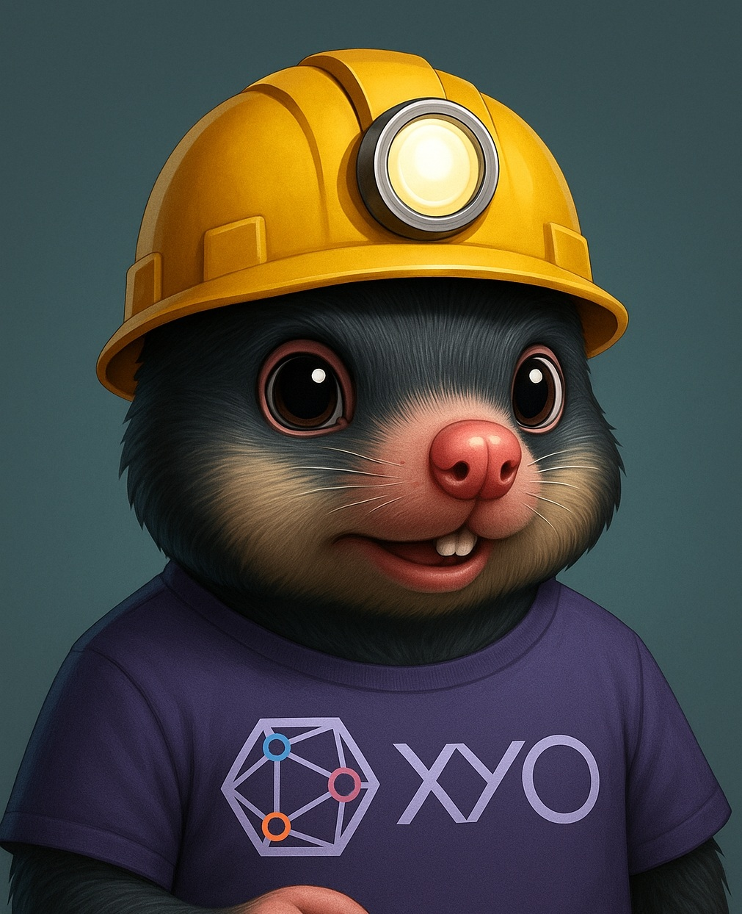

A proof-first community platform built on XYO's XL1 protocol. Real community actions — wallet verification, faucet claims, moderation calls, vouches — become cryptographically verifiable, publicly viewable on-chain proofs. Not claims. Proofs.
The core idea: if something matters, it should be provable. Every action below turns into a signed, on-chain proof — a shareable link anyone can verify, no login required, without ever trusting the person who made the claim.
Prove ownership of a wallet via a signed challenge. Drives role assignment.
Claim a community XL1 beta drip, cooldown-protected.
A recorded, on-chain audit-logged decision. Record-only — it never bans, kicks, mutes, or deletes.
Capture a message's evidence — link, domain, message — and record it. High-risk categories require evidence.
Achievements derived from confirmed proofs — never self-reported.
Two members co-sign one shared proof, so no one can fabricate a claim alone.
A high-impact moderation call witnessed by two moderators, with evidence.
A peer attestation — both parties co-sign, and it must say why. Sybil-gated.
The project calls this the "Direction Lock" — one pipeline, no shortcuts.
Every proof gets a public, server-rendered page anyone can open and verify on XL1 — no login. Members build a proof history at a public profile, with earned badges and a rank ladder built purely from confirmed proof counts, not admin opinion.
"Trust indicators are derived from confirmed proofs. No stored scores, no admin-assigned reputation, nothing hidden."
A Proof-of-Trick card game built for GeoHackers, part of the WinLEW ecosystem. It is designed so ranked matches deal from a server-issued seed and replay every move server-side before a score counts. It is not publicly hosted right now: its old Netlify build is retired.
GeoHackers is an independent community project built on top of XYO's XL1 (XYO Layer One) — it is not an official XYO product. Every proof is ultimately anchored through XL1's BoundWitness protocol: two or more parties co-signing a claim so it can't be fabricated by either side alone. That's the same primitive behind everything above.
Mainnet writes are disabled by default. The trust model, pipeline, observer, and proof schemas are frozen for this line — this is polish and surfacing only.
There's no public sign-up yet. If you found this page and the bot happens to be online — you've already done the hard part. Say hello. 😉